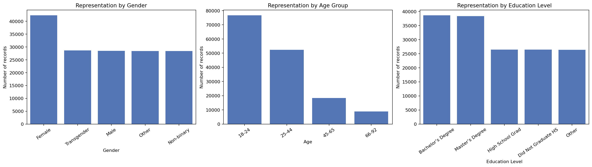
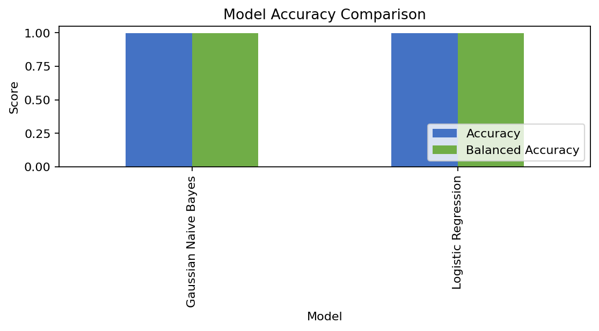
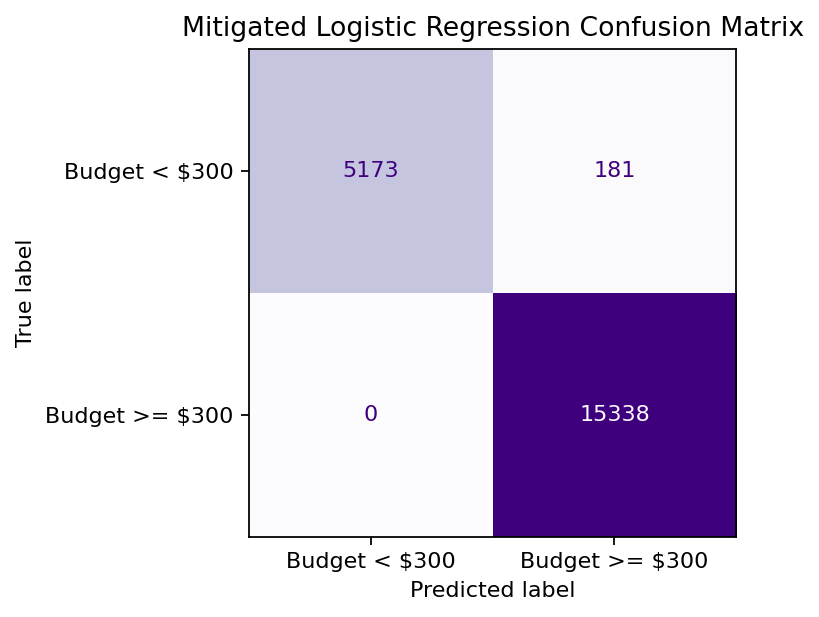
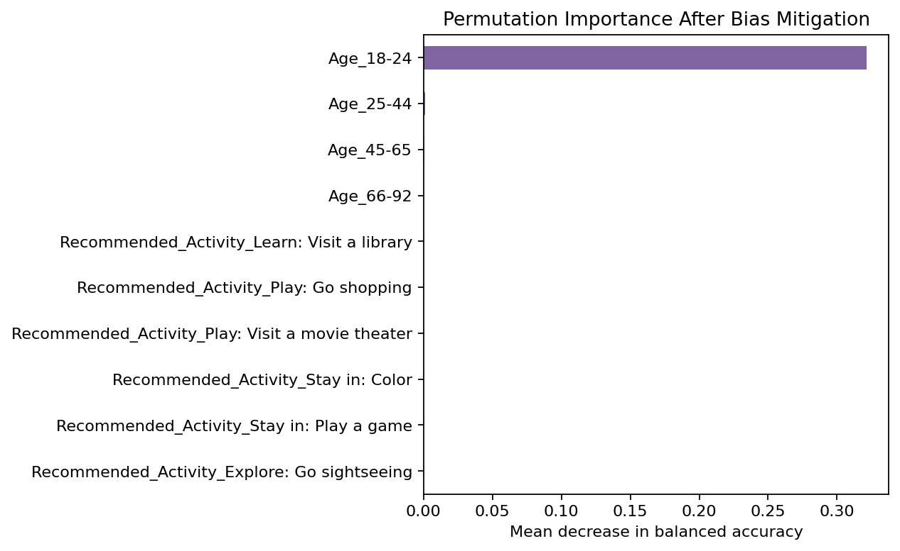
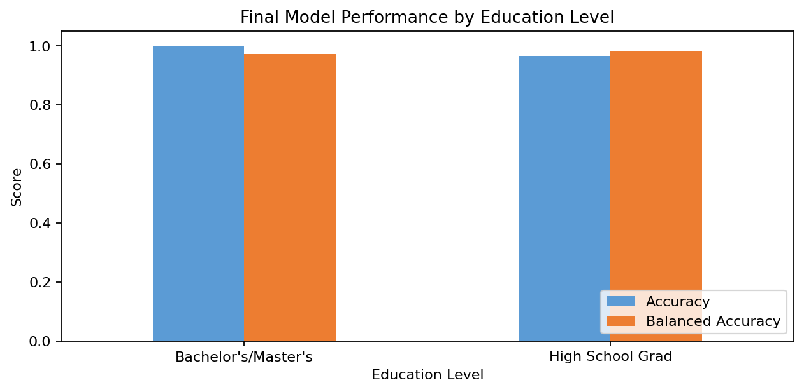

Model Card - IDOOU AI Budget Predicter
Model Details
-- Budget Predictor AI is a binary classification model that estimates whether a user's activity budget is below or above $300.
-- The baseline is Logistic Regression using one-hot encoded user and activity features.
-- It supports activity recommendations, not financial eligibility or credit decisions.
Intended Use
-- Suggest activities compatible with the user's expected budget and preferences.
-- Show predictions with limitations and allow users to edit, reject, or confirm them.
-- Minimize sensitive-data collection and retain human oversight.
-- Do not use for lending, insurance, employment, pricing, or access decisions.
Factors
-- Target: budget below $300 or at least $300.
-- Features include age bands, gender, education, children, and recommended activity.
-- Education is a potential socioeconomic proxy and is evaluated for fairness.
Metrics
-- Report accuracy, balanced accuracy, confusion matrices, and AIF360 fairness metrics.
-- Assess interpretability with permutation importance using balanced accuracy.
Training Data
-- The cleaned dataset contains 103,459 records from 300,000 synthetic records.
-- Splits: 51,729 training, 31,038 validation, and 20,692 test records.
Evaluation Data
-- The held-out test set contains 20,692 records.
-- Validation selects thresholds; test data is reserved for final performance and fairness reporting.
Quantitative Analysis
-- Before mitigation: accuracy 0.998, balanced accuracy 0.998, average odds difference -0.528, statistical parity difference -0.993, equal opportunity difference -1.000, and Theil index 0.002.
-- After Reweighing: accuracy 0.991, balanced accuracy 0.983, average odds difference -0.011, statistical parity difference -0.952, equal opportunity difference 0.000, and Theil index 0.003.
-- Reweighing improves fairness but does not eliminate structural disparity; use the mitigated model only with user confirmation, monitoring, and subgroup evaluation.
Results of the AI model after applying the bias mitigation strategy





Ethical Considerations
-- Keep users in the loop with editable inputs, visible uncertainty, and confirmation before recommendations are acted on.
-- Missing data, education filtering, and strong education-label correlation create inclusiveness and socioeconomic-proxy risks.
-- Reweighing improves some fairness metrics, but unequal errors and potential stereotyping require ongoing monitoring.
Caveats and Recommendations
-- The synthetic, incomplete dataset over-represents some groups and excludes selected education categories.
-- Imbalanced outcomes and strong education signals may produce unequal false positives and false negatives.
-- Further ethical AI analyses: intersectional testing, threshold sensitivity, stakeholder review, calibration, drift, and subgroup monitoring.
Business Consequences
-- Positive Impact: Reduce planning effort and suggest activities within users' budgets.
-- Negative Impact: Biased recommendations may reduce trust, engagement, revenue, adoption, and reputation, while creating ethical and regulatory risk.